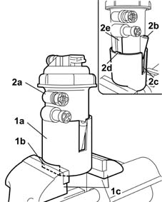
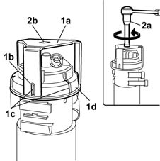
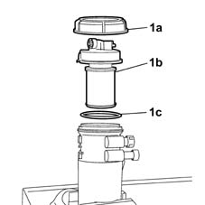
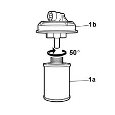
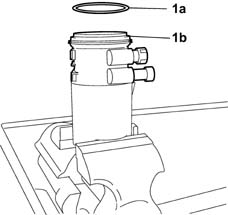
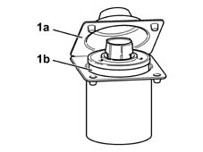
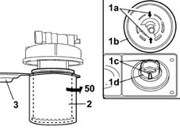
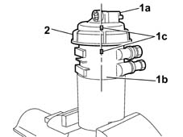

1044B20 fuel filter filtering element - replace
- Path
- Procedures > 10 ENGINE > 1044 FUEL CIRCUIT PUMP/AND DEVICES > 1044B fuel filters > 1044B20 fuel filter filtering element - replace
- Kind
- repair procedure (removal / refitting; the operation number is the code)
- Applies to
- engines: 1.3 JTD; all production periods
- Interactive page
- https://sloeber94.github.io/elrnDB-lYpsln/en/#/2429025
Applies to: engines: 1.3 JTD; all production periods
 Removing
Removing
 Refitting
RefittingProceed with removal 1044B10 fuel filter assembly - r + r or replace .
1. Position the tool (1a) in the vice with the splining (1b) by the shoes (1c), then close the vice.
 | Name | Country |
|---|---|---|
1a | Ring nut with support | 1.871.000.100 |
2. Fit the fuel filter body (2a) in the tool positioned previously so that the bleed screw for the filter body (2b) is in the splining (2c) on the tool and the reference (2d) is aligned with the splining (2e) on the filter body.

Applies to: engines: 1.3 JTD; all production periods
1. Position the spanner (1a) which is part of the filter body support tool, aligning the slots (1b) with the ribs (1c) on the ring nut (1d) for the fuel filter body.
| Name | Country |
|---|---|---|
1a | Ring nut with support | 1.871.000.100 |
2. Fit a regular spanner (2a) in the special housing (2b) in the spanner, then loosen the ring nut undoing it in an anti-clockwise direction.

Applies to: engines: 1.3 JTD; all production periods
1. Remove the ring nut (1a), the filter cover-filter element assembly (1b) and the gasket (1c) between the cover and the filter body.
Drain the fuel remaining inside the filter body.

Applies to: engines: 1.3 JTD; all production periods
1. Rotate the filter cartridge (1a) through about 50 in a clockwise direction until it is in the end of travel position; in this position the cartridge to be replaced is completely free and can be separated from the cover (1b).

Applies to: engines: 1.3 JTD; all production periods
Refitting
Removing1. Take the new gasket (1a) from the replacement kit then, after having lubricated it, place it in the special housing in the fuel filter body (1b).

Applies to: engines: 1.3 JTD; all production periods
1. Open the protective plastic casing cover (1a), taking care not to touch the filter element (1b) inside with your hands, then proceed as described below.

Applies to: engines: 1.3 JTD; all production periods
1. The filter cartridge should be assembled aligning the arrows (1a) on the filter cover (1b) with the references (1c) on the end of the filter element (1d).
2. Exerting slight pressure, rotate the filter cartridge 50 in an anti-clockwise direction until a 'CLACK' is heard (when it reaches the end of travel position).
3. Remove the protective plastic casing for the filter element.

Applies to: engines: 1.3 JTD; all production periods
1. Position the filter cover (1a) on the filter body (1b) aligning the references (1c) on the cover and on the body.
2. Position the ring nut, tighten the thread and rotate it manually in a clockwise direction.

Applies to: engines: 1.3 JTD; all production periods
Position the spanner on the ring nut keeping the filter body in the vice and tighten the fuel filter cover retaining ring nut to the recommended torque.
 | Fastening | Component | Ø | Value (daNm) |
|---|---|---|---|---|
- | Ring nut | FUEL FILTER | - | 3 |
| Name | Country |
|---|---|---|
- | Ring nut with support | 1.871.000.100 |
Proceed with refitting 1044B10 fuel filter assembly - r + r or replace .